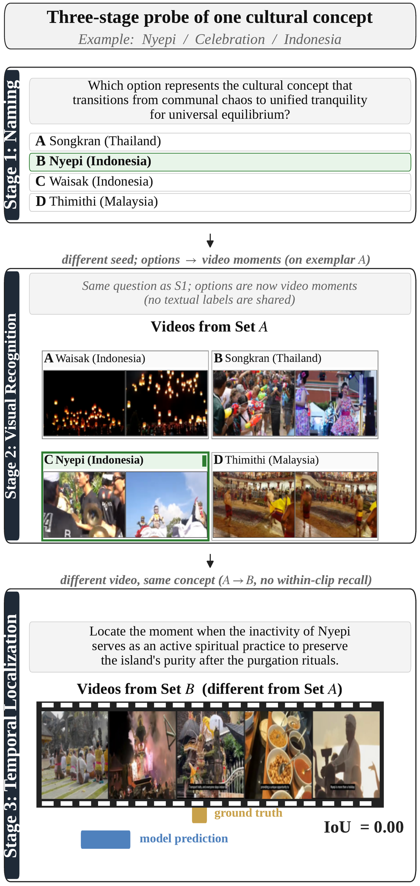
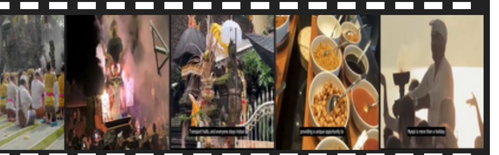
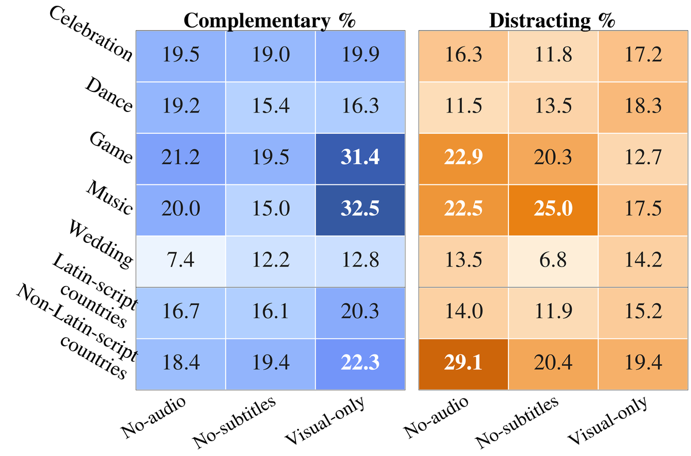
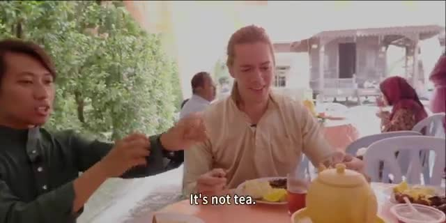
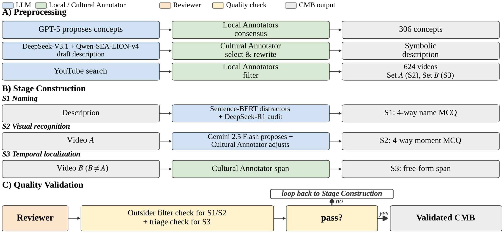

306
Expert-curated concepts
7
SEA countries
5
Categories
624
Source videos
3×3
Stages × modes
14
Human raters

One concept, three probes: Stage 1 names it, Stage 2 recognizes it among unlabeled video moments, Stage 3 localizes its sub-event on a different video.
Cultural understanding in video means more than recognizing what is visible; it requires grasping the symbolic and temporal significance of cultural concepts. We decompose this into three abilities: naming what a concept symbolizes, visually recognizing it on video, and locating its sub-events in time. Existing video-cultural benchmarks tend to test what is seen, collapsing these three abilities into a single score that hides the bottleneck. We introduce the Cultural Moment Benchmark (CMB): 306 expert-curated concepts from seven countries in Southeast Asia across five categories. We evaluate each concept through three stages, one per ability. Given a description, Stage 1 (S1) selects from four candidate concept names, Stage 2 (S2) selects from four candidate video moments, and Stage 3 (S3) predicts the start and end times of the moment in a video. To keep each stage focused on a distinct ability, we use three design choices: semantic-similarity distractors (S1, S2), unlabeled video moments (S2), and free-form localization on a different example video (S3). Across six vision-language models, the failure mode varies by ability and modality. i) Even the strongest closed-source models score below 30% when all three stages must be correct; ii) Across stages, the three abilities do not fully cascade: naming a concept correctly helps half the models recognize it on video, but recognizing it has little effect on locating the sub-event in time; iii) Audio is complementary, redundant, or distracting depending on the concept, more often distracting in countries with non-Latin scripts; removing both audio and subtitles hurts Games and Music the most. Separately, our 14-rater human study shows that even Expert raters score below chance on concepts from a neighboring country, indicating that CMB requires country-specific cultural knowledge. CMB acts as a diagnostic harness, attributing failures to a specific ability or modality rather than aggregating them into a single score.
Try the published example concept: Nyepi / Celebration / Indonesia. Pick an answer in Stage 1 and Stage 2 to reveal the ground truth.
Given a symbolic description, select the concept name. Distractors are drawn by semantic similarity: one from the same country, two from neighbors.
A question answerable by generic object recognition is rejected at construction: the description captures what the concept symbolizes, not what is visible.
Same description, but the options are now four unlabeled video moments from Set A. An independent random seed reshuffles the positions, so Stage 1 leaks nothing.
Frames are from the paper's Figure 1. In the evaluation, models watch the actual unlabeled moments; the country names above are shown here for illustration only. Playable clips arrive with the public release.
A different video of the same concept (Set B), so within-clip recall from Stage 2 cannot help. The model predicts a free-form [tstart, tend] span.

Scored as intersection over union between predicted and ground-truth spans, averaged over the 631 Stage-3 pairs.
Every stage runs three times, varying what the model sees from earlier stages. Prior context turns out to help the strongest models and hurt the weakest.
Each stage sees only its own question. The baseline of pure, isolated ability.
The model's own answer rides along, right or wrong, like a real multi-step pipeline.
The previous answer plus the correct one: an upper bound with the earlier stage solved.
27.8%
Best end-to-end score
Even Gemini 3.1 Pro clears all three stages for fewer than 3 in 10 concepts. The open-source models land in single digits, and InternVL sits near zero.
+18 then +0
The cascade breaks
Correct naming lifts moment recognition by about 18 points for the strongest models, but correct recognition adds nothing when localizing on a fresh clip. Even specialist grounding models top out at 19.3 mIoU, versus 33.4 for the best VLM.
85.9 vs 9.8
Context widens the gap
With prior context, Gemini's recognition climbs to 85.9% while InternVL's falls to 9.8%. Carry and Feedback help the strongest models and hurt the weakest.
29% vs 14%
Audio can mislead
The share of videos where audio distracts doubles in non-Latin-script countries. Removing audio and subtitles together hurts Games and Music the most.
21.3%
Below chance, next door
Expert raters fall below the 25% chance line when naming a neighboring country's concepts. The knowledge CMB tests is country-specific, not regional.

Modality roles across all S3 video pairs: share of videos where removing a modality hurts (complementary) or helps (distracting), by category and writing-system cluster.
"Which moment shows the wedding reception where both families eat together, the large feast that marks the union?"

Gemini needs the speech; Qwen3.5 needs the captions. Drop either one and somebody loses the moment.
Zero-shot results of the 3-stage × 3-mode evaluation. S1 and S2 are 4-option multiple-choice accuracy (random guess is 25%). S3 is mean IoU of the predicted free-form span over the 631 Stage-3 pairs. Joint credits a concept only when all three abilities line up. R / C / F mark the Reset, Carry, and Feedback context modes; S1 has one column because there is no prior context to carry. Seed results are from Table 2 of the paper; conditional cascade metrics (c-S2, c-mIoU) are in its Table 3. Click a column header to sort.
| Model | Group | S1 | S2 R | S2 C | S2 F | S3 R | S3 C | S3 F | Joint R | Joint C | Joint F | Date |
|---|
The gap between closed and open models survives cluster-bootstrap resampling; the ordering inside each group does not. Prior context (Carry, Feedback) helps the strongest models and hurts the weakest.
Do purpose-built temporal-grounding models close the localization gap? Three specialists run Stage 3 with the same textual cue on video B, with no S1 or S2 context (1 fps, 224×224; Table 18 of the paper). Even the best of them, at 19.3 mIoU overall, stays about 14 points below the strongest VLM.
| Model | Celebration | Dance | Game | Music | Wedding | Overall mIoU |
|---|---|---|---|---|---|---|
| MUSEG | 22.4 | 15.5 | 21.6 | 26.4 | 13.8 | 19.3 |
| TimeSuite | 9.5 | 3.9 | 11.2 | 10.6 | 10.5 | 9.2 |
| TRACE | 8.8 | 2.0 | 6.0 | 18.6 | 13.5 | 5.9 |
CMB is the only video-cultural benchmark that combines a Southeast Asia focus, a multi-stage cascade with distinct ability stages, conditional cross-stage metrics, free-form temporal localization, and a closed human evaluation. Table 1 of the paper, in full:
| Benchmark | SEA focus |
Multi-stage cascade |
Cond. metrics |
Free-form temp. loc. |
Avg. dur. (min) |
Human eval |
Cultures covered |
|---|---|---|---|---|---|---|---|
| SCBimage (2025) | ✓ | ✓ | ✓ | ✗ | n/a | ✗ | 7 |
| AVMeme Exam (2026) | ✗ | ✗ | ✗ | ✗ | ≤0.5 | ✓ (closed) | 5+ |
| ChineseVideoBench (2025) | ✗ | ✗ | ✗ | ✗ | ≈1.0 | ✗ | 1 |
| GIMMICK (2025) | partial | ✗ | ✗ | ✗ | 0.17 | ✗ | 139 |
| MINERVA-Cultural (2026) | partial | ✗ | ✓ | ✗ | 12.62 | ✓ | 18 |
| VideoNorms (2026) | ✗ | ✗ | ✗ | ✗ | 0.25 | ✗ | 2 |
| VideoVista-CulturalLingo (2025) | ✗ | ✗ | ✗ | ✗ | 4.05 | ✗ | 3 |
| ViMUL-Bench (2025) | ✗ | ✗ | ✗ | ✗ | 2.92 | partial | 14 |
| CMB (ours) | ✓ | ✓ | ✓ | ✓ | 6.2* | ✓ (closed) | 7 |
Multi-stage cascade: distinct ability stages scored sequentially with conditional dependency. Cond. metrics: cross-stage success-given-success, e.g. P(S2 | S1 correct). Free-form temp. loc.: an unconstrained [tstart, tend] span rather than selecting from candidates. Human eval: humans recruited separately from annotators, evaluated on the same task; closed adds an explicit prohibition on web search. *: S3 videos. SCBimage is the image-based precursor; all other rows are video benchmarks.
CMB is built on one design principle: humans produce all visual ground truth; LLMs scaffold only textual artifacts. Local Annotators (native speakers) validate concepts and filter candidate videos; Cultural Annotators (native speakers with research or co-curricular involvement in their country's traditions) curate the symbolic descriptions and annotate S2 moments and S3 spans; non-local Reviewers run an Outsider Filter on every concept, answering each description from regional priors alone, so descriptions that leak regionally guessable cues are rewritten or discarded. DeepSeek-R1 audits option sets and sub-event descriptions as text only; it never sees video, audio, or frames.

The construction pipeline: preprocessing yields 306 concepts and 624 source videos; each concept is materialized into S1, S2, and S3 questions; every concept passes the Outsider Filter and S3 triage before entering the validated benchmark.
The 306 concepts are organized as country/category/concept over seven countries: four with Latin script (Indonesia, Malaysia, the Philippines, Vietnam) and three with non-Latin scripts (Cambodia, Myanmar, Thailand). From about 6,120 candidate videos found by concept-and-country search, Local Annotators keep 624: Set A (one per concept, 306 videos, 2.0 minutes on average) for Stage 2, and Set B (318 videos, 6.2 minutes on average) for Stage 3.
Think your model knows Southeast Asian culture? You will soon be able to prove it, one ability at a time. We are preparing CMB as a challenge for upcoming workshops at ICMR 2027 and ACL 2027: the dataset, the evaluation suite, and the submission process will be announced here and in the News section. If you are interested in early access or in participating, email buraks@smu.edu.sg.
Input: a symbolic description of a cultural concept (S1, S2), four candidate names (S1) or four unlabeled candidate video moments (S2), and a different full video with a target sub-event description (S3). Output: the chosen option (S1, S2) and a free-form [tstart, tend] span (S3). Metrics: accuracy for S1 and S2, mean IoU for S3, the conditional metrics c-S2 and c-mIoU for cascade analysis, and the Joint score for end-to-end success.
CMB covers seven SEA countries and five categories; other SEA countries (Brunei, Laos, Timor-Leste, Singapore) and further categories are out of scope for now, reflecting the availability of qualified Local Annotators and high-quality source videos. Next on the roadmap: balancing the dataset across categories and countries, preparing the challenge, and broadening cultural assessment to other underrepresented regions with the CMB framework as a template. If you want to collaborate on culturally aware multimodal AI or extend the framework to new regions, book a chat or email buraks@smu.edu.sg.
The benchmark annotations and evaluation suite are released under CC BY-NC-SA 4.0 for non-commercial research. Source videos are referenced by YouTube ID and are not redistributed; copyright remains with the original uploaders, and an opt-out protocol is provided. CMB contains no personally identifiable information and is a test-only benchmark: please do not use it for training.
@misc{satar2026cultural,
title={Cultural Moment Benchmark: Evaluating Video Cultural Reasoning and Grounding in Southeast Asia},
author={Burak Satar and Zhixin Ma and Yu-Tong Cheng and Huy Hoang Tran and Phuong Anh Nguyen and Chong-Wah Ngo},
year={2026},
eprint={2608.23065},
archivePrefix={arXiv},
url={https://arxiv.org/abs/2608.23065}
}Accepted to the EMNLP 2026 Main Conference; this entry will be replaced by the ACL Anthology version once published.